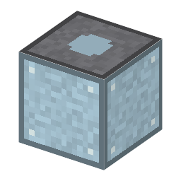

説明
①子ども 鉄の台にかぶせたガラスの鐘。となりの手押しポンプで空気をぬく。
③大人 19世紀の実験室では、ふちを平らにみがいたガラスの鐘（ベルジャー）を、グリースを塗った平らな台にのせた。外の空気が 1cm² あたり約1kg の力で鐘を押しつけるので、それでふさがる。
④ガチ 大きい容器や熱い容器はのちに軟鋼の溶接容器になり、超高真空ではステンレスを 150〜250℃で焼き出して（ベーキング）壁にしみこんだ気体を先に追い出す。ここではガラスの段階だけ。
作り方
使い道
（このアイテムを使うレシピは無い）